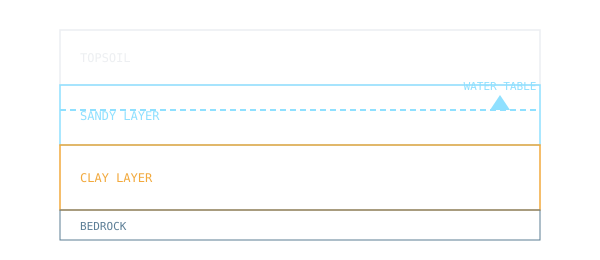

Soil classification, compaction, seepage, shear strength and foundation behaviour.

NOC: Soil Mechanics / Geotechnical Engineering I — IIT Kharagpur
Click an option to see the correct answer and a short explanation instantly.